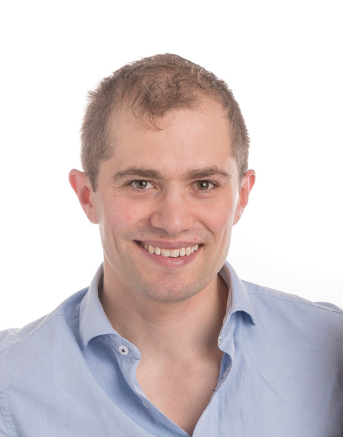

Min portfölj

Detta är min portfölj. Denna sidan innehåller en presentation av mig själv och mina projekt. Underhåll denna sidan under hela kursen och uppdatera den efter hand och behov.
Mitt namn är Emil Folino. Född och uppvuxen i Hillerød, Danmark, några mil norr om Köpenhamn. Har alltid sprungit orientering och var även det som tog mig till Sverige och Norrköping 2007. I Norrköping pluggade jag till Civilingenjör i Medieteknik förutom allt orienterande.
Vi syns och hörs i forum, chatt och sal!